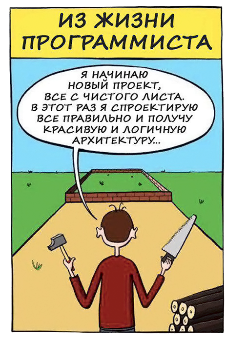
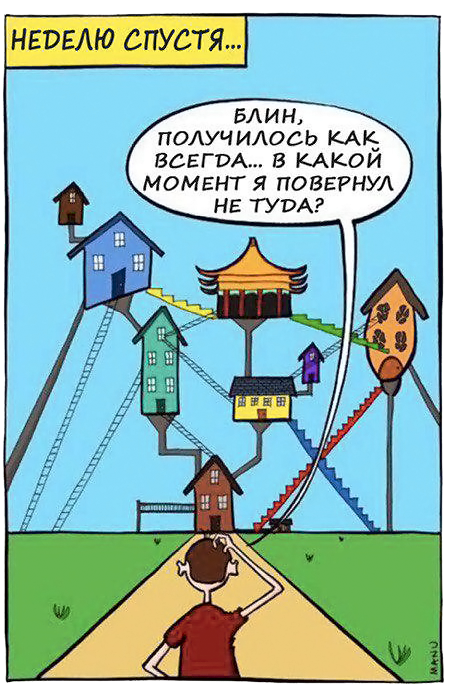
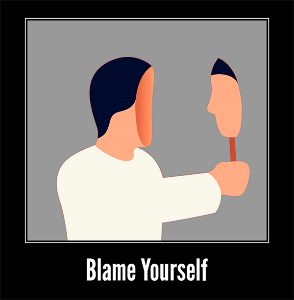
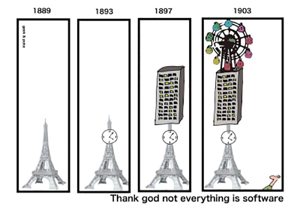
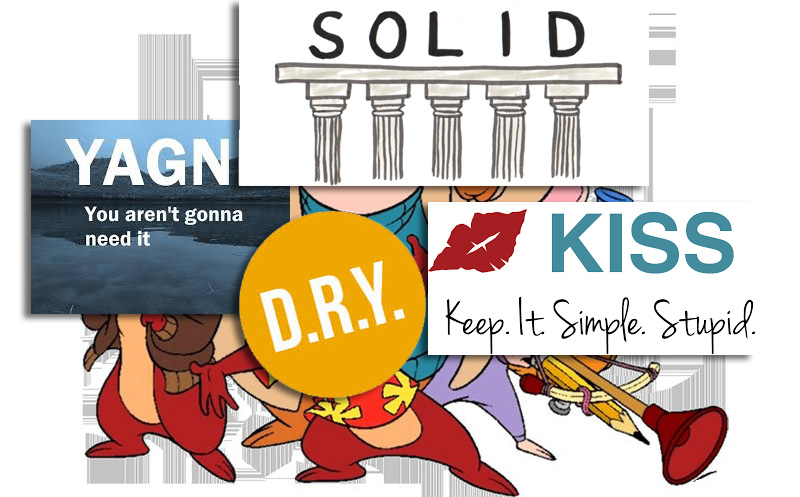
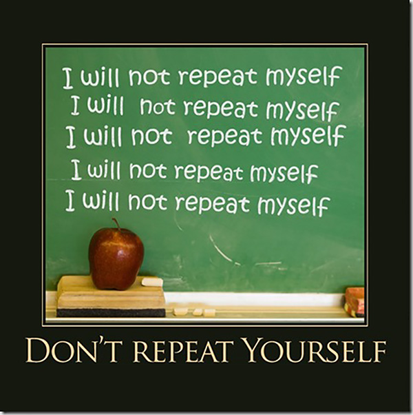
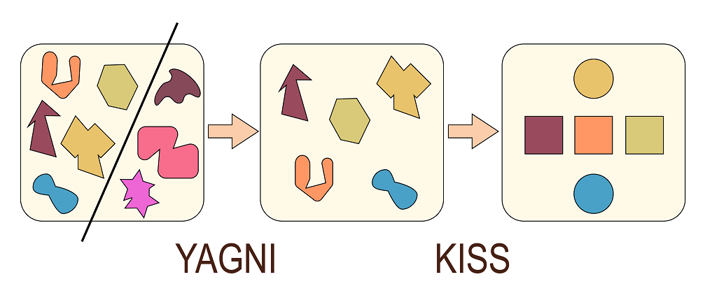
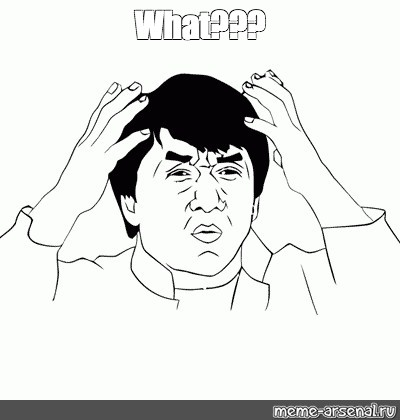

Be
SOLID
not
STUPID
Ведущий разработчик "ЭДСервер"10 лет в разработке
|
Расплата за плохой код
- Рост тех. долга
- Сложность поддержки
- Уменьшение производительности команды
- Крах всего проекта

Code smells
Кент Бек
|
Запахи кода
- Признаки необходимости рефакторинга
- Нечетко формализированы
- Обнаруживаются при взаимодействии с кодом
- Умение выявлять приходит с опытом
Причины плохого кода
- Плотный график
- Неадекватное начальство (product owners)
- Нетерпимые клиенты (business owners)
- Бестолковые коллеги



M
E
S
S
A
G
E
C
H
A
I
N
S
r
e
p
a
r
a
m
e
t
e
r
i
z
a
t
i
o
n
S
H
O
T
G
U
N
S
U
R
G
E
R
Y
o
p
t
i
m
i
z
a
t
i
o
n
D
U
P
L
I
C
A
T
I
O
N
d
e
a
d
c
o
d
e
m
a
c
a
r
o
n
i
g
o
d
o
b
j
e
c
t
b
a
d
n
a
m
i
n
g
c
o
m
m
e
n
t
s
Дублирование кода
- Одно и тоже выражение в одном и более методе класса
- Одно и тоже выражение в классах потомках одного родителя
- Одно и тоже выражение в несвязанных классах бизнес логики
function ringSurface($r1,$r2) {
$surf1 = $this->bigCircleSurface(r1);
$surf2 = $this->smallCircleSurface(r2);
return $surf1 - $surf2;
}
private function bigCircleSurface($r1) {
$pi = 4 * (atan 1/2 + atan(1/3) );
return $pi*sqr($r1);
}
private function smallCircleSurface($r2) {
$pi = 4 * (atan (1/2) + atan(1/3) );
return $pi*sqr($r2);
}
Преждевременная оптимизация
Premature optimization is the root of all evil. DonaldKnuth
- Лишний функционал
- Излишний функционал
- Оптимизация медленного кода
Большое количество параметров
- Аргументы усложняют функции
- Аргументы усложняют тестирование
- Аргументы - флаги подразумевают несколько действий
Божественный объект
Плохое именование
-
имена должны передавать намерения программиста
$d; // Прошедшее время -> daysSinceCreation -
избегайте дезинформации
$userList -> $userGroup -
используйте удобопроизносимые имена
$genymdhms -> $generationTimestamp -
выбирайте имена, удобные для поиска
const PDW -> WORK_DAYS_PER_WEEK -
избегайте префиксы и суффиксы
$iCount -> $count interface ShapeFactoryInterface -> interface ShapeFactory
Комментарии
Пахнущие комментарии в коде.
- phpdoc (часто)
- уточняющие комментарии
- поясняющие комментарии
- закомментированный код
/**
* Gets total profit amount. //really?
*
* @param QueryBuilder $qb //Nemojet but
* @return int //kakoy poleznuy comment
*/
public function getTotalProfit(QueryBuilder $qb): int
{
$qb->select('SUM(CompletedOrders.profit)');
$this->addCriteria($qb);
//$this->addAnotherCriteria($qb);
return $qb->getQuery()->getSingleScalarResult();
}
Мертвый и недостижимый код
Мертвый код
$a = 2; //мертвый код
$b = 12
$c = $a * $b; //мертвый код
return $b;
Недостижимый код
class PriceCalculator {
private static function springDiscount($price) {
return $price * 0.9; // недостижимый код
}
public static function getItemPrice(OrderItem $item, int $quantity) {
return $item->getPrice() * $quantity;
}
}
Спагетти код
function checkSmth($a, $b, $c) {
if ($a > 12) {
$this->doSomething();
if ($b < $a) {
$this->doSomething2();
if ($c * $b < $a ()) {
$this->doSomething3();
}
} else {
$this->doSomethingIfNot1()
}
}
}
Принципы проектирования спешат на помощь
DRY (do not repeat yourself)
DRY (do not repeat yourself)
class PriceCalculator {
private static function springDiscount($price) {
return $price * 0.9;
}
public static function getItemPrice(OrderItem $item, int $quantity) {
return $this->springDiscount($item->getPrice() * $quantity);
}
}
class Order {
public function calculatePrice() {
$price = 0;
foreach($this->orderItems as $orderItem) {
$price += $orderItem;
}
return $price * (SeasonChecker::isSpring() ? 0.9 : 1);
}
}
DRY (do not repeat yourself)
class CsvValidation {
public function validateProduct(array $product) {
if (!isset($product['color'])) {
throw new \Exception('Import fail: attribute color is missing');
}
if (!isset($product['size'])) {
throw new \Exception('Import fail: attribute size is missing');
}
if (!isset($product['type'])) {
throw new \Exception('Import fail: attribute type is missing');
}
}
}
DRY (do not repeat yourself)
class Shipment {
public $deliveryTime = 4;
public function calculateDeliveryDay(): DateTime
{
return new \DateTime("now +{$this->deliveryTime} day");
}
}
class OrderReturn {
public $returnLimit = 4;
public function calculateLastReturnDay(): DateTime
{
return new \DateTime("now +{$this->returnLimit} day");
}
}
DRY (do not repeat yourself)
- Дублирование знания всегда является нарушением принципа DRY
- Дублирование кода не обязательно нарушает принцип DRY
- Бывают совпадения в бизнес логике
YAGNI «You aren't gonna need it» (Вам это не понадобится)
- Всегда реализовывайте функционал который действительно нужен
- Никогда не реализовывайте функционал который может понадобится в будущем
- Не оптимизируйте производительность кода, пока это действительно не будет нужно
KISS “Keep it simple, stupid”
- Выбирая между двумя реализациями выбирайте ту которая проще
- Постоянно упрощайте Ваш код
- Чем проще Ваш код, тем лучше Вы как разработчик
Разница между YAGNI и KISS
Solid
.jpg)
Solid
Проблемы архитектуры
- Закрепощённость
- Неустойчивость
- Неподвижность
- Неоправданная сложность
- Неоправданные повторения
- Неопределенность
- Вязкость
Solid
- Принцип единственной(персональной) ответственности (The Single Responsibility Principle) SRP
- Принцип открытости/закрытости (The Open Closed Principle) OCP
- Принцип подстановки Барбары Лисков (The Liskov Substitution Principle) LSP
- Принцип разделения интерфейса (The Interface Segregation Principle) ISP
- Принцип инверсии зависимостей (The Dependency Inversion Principle) DIP
Single Responsibility Principle
Принцип единственной(персональной) ответственности
Каждый объект должен иметь одну ответственность и эта ответственность должна быть полностью инкапсулирована в класс. Все его поведения должны быть направлены исключительно на обеспечение этой ответственности.
Single Responsibility Principle
class OrdersReport {
public function getOrdersInfo($startDate, $endDate) {
$orders = $this->queryDBForOrders($startDate, $endDate);
return $this->format($orders);
}
protected function queryDBForOrders($startDate, $endDate) {
return DB::table('orders')->whereBetween(
'created_at', [$startDate, $endDate])->get();
}
protected function format($orders) {
return '<h1>Orders: ' . $orders . ' </h1>';
}
}
Single Responsibility Principle
Существует лишь одна причина, приводящая к изменению класса.
class OrdersReport {
protected $repo;
protected $formatter;
public function __construct(
OrdersRepository $repo,
OrdersOutPutInterface $formatter) {
$this->repo = $repo;
$this->formatter = $formatter;
}
public function getOrdersInfo($startDate, $endDate) {
$orders = $this->repo->getOrdersWithDate($startDate, $endDate);
return $this->formatter->output($orders);
}
}
The Open Closed Principle
Принцип открытости/закрытости
Программные объекты (классы, модули, функции) должны быть открыты для расширения, но в тоже время закрыты для модификации.
The Open Closed Principle
class Rectangle {
public $width;
public $height;
public function __construct($width, $height) {
$this->width = $width;
$this->height = $height;
}
class Circle {
public $radius;
public function __construct($radius) {
$this->radius = $radius;
}
}
class AreaCalculator {
public function calculate($shape) {
if ($shape instanceof Rectangle) {
$area = $shape->width * $shape->height;
} else {
$area = $shape->radius * $shape->radius * pi();
}
return $area;
}
}}
The Open Closed Principle
interface AreaInterface {
public function calculateArea();
}
class Rectangle implements AreaInterface {
public $width;
public $height;
public function __construct($width, $height) {
$this->width = $width;
$this->height = $height;
}
public function calculateArea(){
$area = $this->height * $this->width;
return $area;
}
}
class AreaCalculator {
public function calculate($shape) {
return $shape->calculateArea();
}}
$rectangle = new Rectangle(5, 4);
$obj = new AreaCalculator();
echo $obj->calculate($rectangle);
Liskov Substitution Principle
Принцип подстановки Барбары Лисков
Если каждому объекту O1 типа S соответствует объект O2 типа T. Таким образом, всех программ P, определенных на основе T, поведение P не меняется при замене O1 на O2, причем S является подтипом Т.
Liskov Substitution Principle
Liskov Substitution Principle
- Подтипы должны быть заменяемы их исходными типами
- Предварительные условия не могут быть усилены в подтипе.
- Постусловия не могут быть ослаблены в подтипе.
Liskov Substitution Principle
interface LessonRepositoryInterface {
/**
* @return array
*/
public function getAll();
}
class FileLessonRepository implements LessonRepositoryInterface {
public function getAll() {
return FileStorage::getLessons();
}
}
class DbLessonRepository implements LessonRepositoryInterface {
public function getAll() {
return LessonTable::all();
}
}
class LessonTable {
/**
* @return Collection
*/
static function all() {
//...
}
}
Liskov Substitution Principle
interface LessonRepositoryInterface {
/**
* @return array
*/
public function getAll();
}
class FileLessonRepository implements LessonRepositoryInterface {
public function getAll() {
return FileStorage::getLessons();
}
class DbLessonRepository implements LessonRepositoryInterface {
public function getAll() {
return LessonTable::all()->toArray();
}
}
class LessonTable {
/**
* @return Collection
*/
static function all() {
//...
}
}
Interface Segregation Principle
Принцип разделения интерфейса
Нельзя заставлять клиента реализовать интерфейс, которым он не пользуется.
Interface Segregation Principle
interface workerInterface {
public function work();
public function sleep();
}
class HumanWorker implements workerInterface {
public function work() {
//
}
public function sleep() {
//
}
}
class RobotWorker implements workerInterface {
public function work() {
var_dump('works');
}
public function sleep() {
// Не нужен
}
}
Interface Segregation Principle
interface WorkAbleInterface {
public function work();
}
interface SleepAbleInterface {
public function sleep();
}
class HumanWorker implements WorkAbleInterface, SleepAbleInterface {
public function work() {
//
}
public function sleep() {
//
}
}
class RobotWorker implements WorkAbleInterface {
public function work() {
//
}
}
The Dependency Inversion Principle
Принцип инверсии зависимостей
- Высокоуровневые модули не должны зависеть от низкоуровневых. Оба вида модулей должны зависеть от абстракций.
- Абстракции не должны зависеть от подробностей. Подробности должны зависеть от абстракций.
The Dependency Inversion Principle
class MySQLConnection {
public function connect() {
//
}
}
class PasswordReminder {
private $dbConnection;
public function __construct(MySQLConnection $dbConnection) {
$this->dbConnection = $dbConnection;
}
}
The Dependency Inversion Principle
interface ConnectionInterface {
public function connect();
}
class DbConnection implements ConnectionInterface {
public function connect() {
//
}
}
class PasswordReminder {
private $dbConnection;
public function __construct(ConnectionInterface $dbConnection) {
$this->dbConnection = $dbConnection;
}
}
- Мартин Фаулер. Рефакторинг. Улучшение существующего кода
- Роберт Мартин. Чистая архитектура. Искусство разработки программного обеспечения
- Роберт Мартин. Training videos https://cleancoders.com/
- Ошибочное понимание принципа DRY https://habr.com/company/mailru/blog/349978/
- KISS VS YAGNI: https://enterprisecraftsmanship.com/2015/06/15/kiss-revisited
- Простое объяснение принципов SOLID https://habr.com/company/mailru/blog/412699/
|
Комментарии
Возможные комментарии в коде.